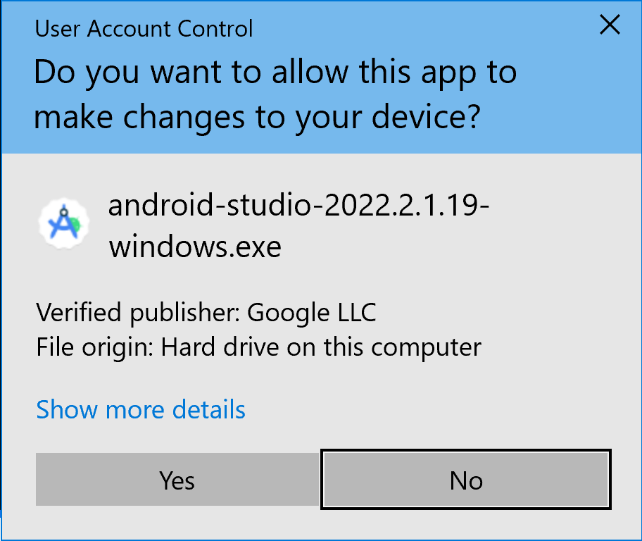
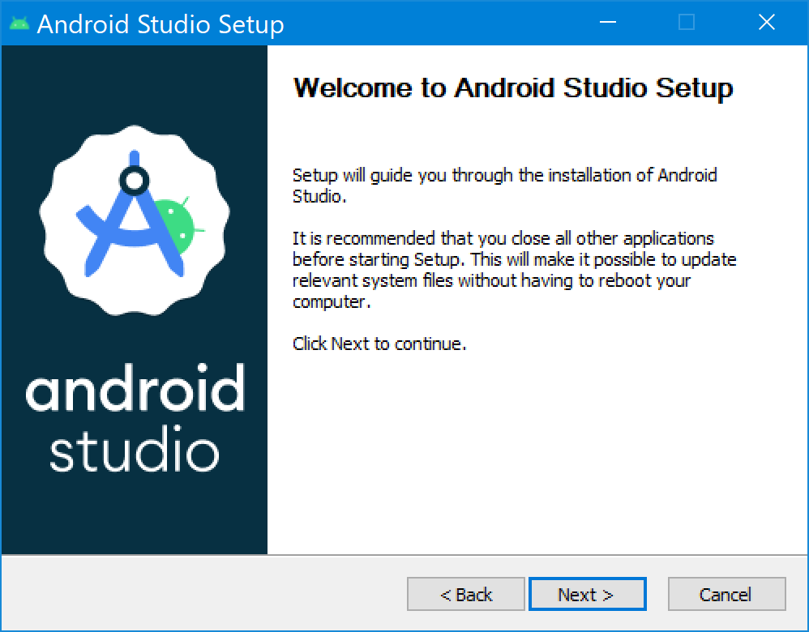
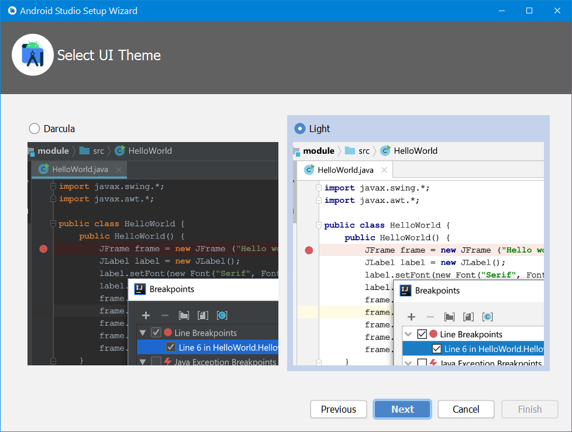
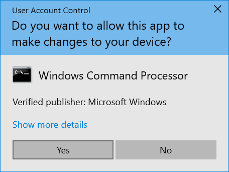
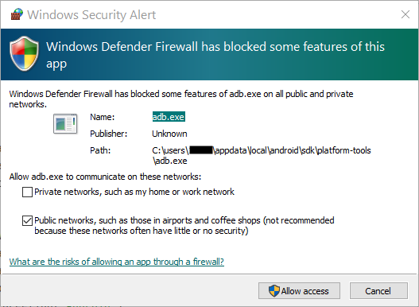
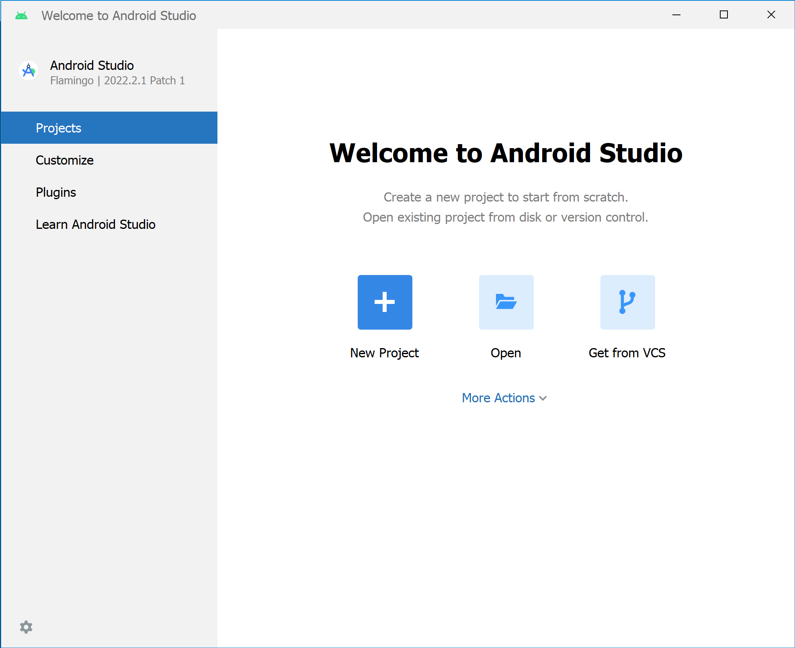

Buka folder tempat anda mendownload aplikasi,jika belum punya bisa download disini
Klik dua kali file tersebut
Jika anda melihat dialog User Account Control tentang mengizinkan penginstalan melakukan perubahan pada komputer,klik yes
Welcome to Android Studio Setup akan ditampilkan. 
Klik Next untuk memulai penginstalan.
Terima setelan penginstalan default untuk semua langkah.
Klik Finish saat penginstalan selesai untuk meluncurkan Android Studio.
Pilih preferensi tema terang atau gelap saat Android Studio pertama kali diluncurkan. Screenshot dalam kursus ini menggunakan tema terang, tetapi Anda dapat memilih tema mana pun sesuai keinginan.
Selama penginstalan, wizard penyiapan akan mendownload dan menginstal komponen serta alat tambahan yang diperlukan untuk pengembangan aplikasi Android. Proses ini mungkin berlangsung beberapa saat, bergantung pada kecepatan internet. Selama proses ini, Anda mungkin melihat dialog User Account Control untuk Windows Command Processor. Klik Yes untuk menerima dialog.
Anda mungkin juga menerima Windows Security Alert tentang adb.exe. Klik Allow Access jika diperlukan, untuk melanjutkan penginstalan.
Saat download dan penginstalan selesai, klik Finish.
Jendela Welcome to Android Studio akan ditampilkan dan Anda siap untuk mulai membuat aplikasi.
